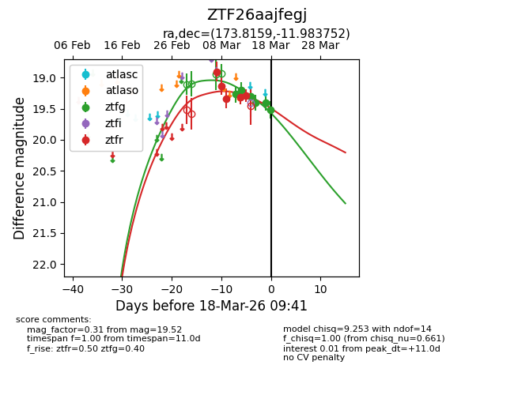
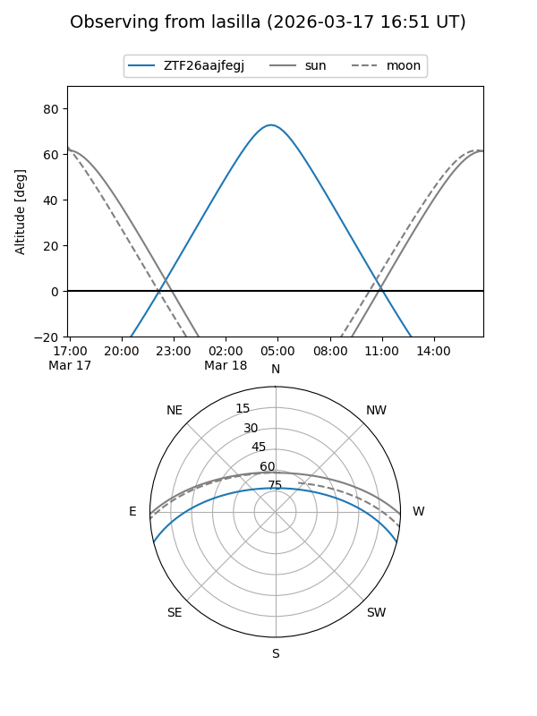
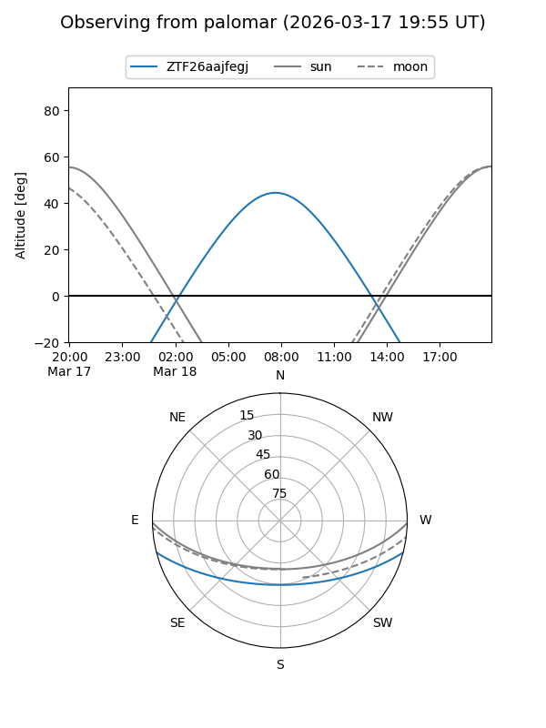
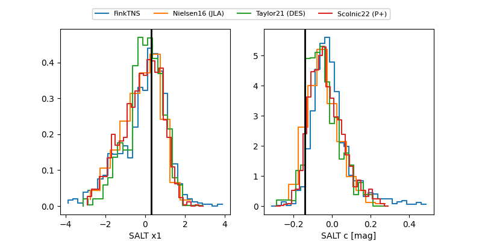

ZTF26aajfegj
Target ZTF26aajfegj at 2026-03-18 09:43
Aliases and brokers:
FINK: link
Lasair: link
ALeRCE: link
alt names
ZTF26aajfegj (ztf,fink_ztf)
Coordinates:
equatorial (ra, dec) = 173.8159,-11.98375
equatorial (HMS+DMS) = 11:35:15.82,-11:59:01.51
galactic (l, b) = (275.1731,+46.74135)
Flags:
Photometry:
last ztfg=19.52, ztfr=19.29
6 ztfg, 5 ztfr detections
Lightcurve

Visibility


Additional plots
